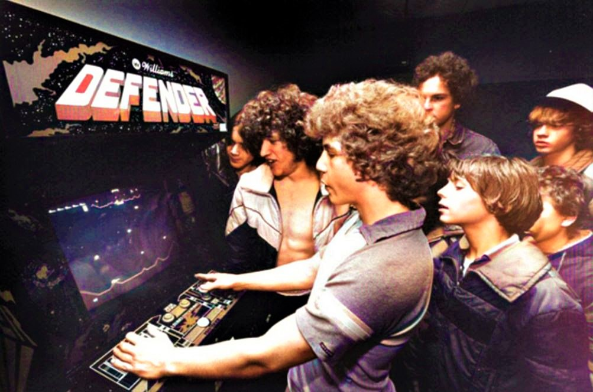

The 1980s marked a revolutionary period in video game history, often called the "Golden Age of Arcade Games." This decade saw the transition from simple arcade cabinets to sophisticated home gaming systems.
Key Consoles
- Atari 2600 - One of the first successful home video game consoles
- Nintendo Entertainment System (NES) - Revived the home console market after the 1983 crash
- Sega Master System - Sega's entry into the home console market

Iconic Games
- Pac-Man (1980) - Became a cultural phenomenon and one of the best-selling arcade games
- Donkey Kong (1981) - Introduced Mario to the world
- Super Mario Bros. (1985) - Defined the platformer genre and saved the gaming industry
- The Legend of Zelda (1986) - Pioneered the action-adventure genre
- Tetris (1984) - Simple yet addictive puzzle game that became a global hit

Notable Achievements
The 1980s saw the rise of recognizable gaming characters, the establishment of major franchises, and the recovery from the video game crash of 1983. Nintendo's strict quality control and innovative game design set new standards for the industry.